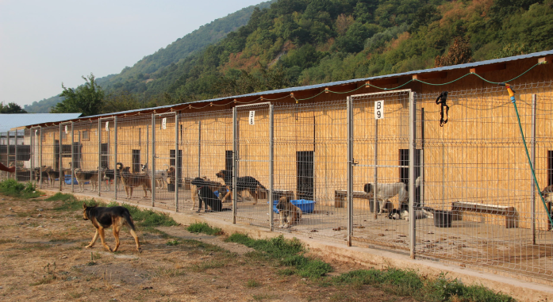

Asociația Pro Pet, înființată în 2012, a început în anul următor construcția adăpostului din Mehadia, Caraș-Severin, în colaborare cu ProDog Romania e.V. din Germania, Duisburg. Acest parteneriat a avut drept scop oferirea unui adăpost sigur și îngrijire pentru animalele fără stăpân din zonă. Prin eforturile comune și implicarea voluntarilor, am reușit să realizăm acest proiect și să oferim un spațiu adecvat pentru animalele care au nevoie de protecție și îngrijire. Scopul principal al Asociației Pro Pet este să vină în ajutorul animalelor fără stăpân, în special câinilor și pisicilor din zona orașului Băile Herculane și satele învecinate. Pentru aceasta, am inițiat construirea unui padoc, care poate găzdui până la 1000 de câini și 100 de pisici, oferindu-le un adăpost sigur și condiții de trai decente.
În cadrul acestui padoc funcționează și un cabinet veterinar autorizat, asigurând îngrijirea medicală necesară pentru animalele aflate în grija noastră. Totodată, am obținut autorizații pentru transportul animalelor vii de la ANSVSA, asigurând astfel că animalele sunt transportate în condiții sigure și conforme cu regulamentele în vigoare. De asemenea, organizăm lunar campanii de sterilizare, contribuind la controlul populației de animale fără stăpân și la reducerea suferinței acestora. Până în prezent, am reușit să sterilizăm și să sterilizăm peste 15.000 de câini și pisici, oferindu-le astfel șansa unei vieți sănătoase și fericite.